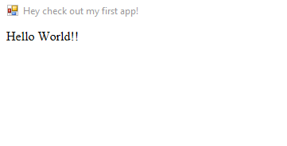
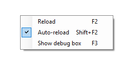

The bare minimum
-
There is an example program called Hello World. With this, you can easily
understand the anatomy of a Scriptonit application; right now we only need 2 files:
HelloWorld.exe, the main executable (it's the same for every project, you'll see why)app/start.html, the entry point of the HTML/JS/CSS world- The application folder name is always
app - The entry point file is always
start.html - The exe file must be one level higher than start.html
This is the simplest possible app.
It also demonstrates all the rules we have:
In the HTML file, you'll see no magic:
<!doctype html>
<html>
<head>
<title> Your first app! </title>
</head>
<body>
Hello World!
</body>
</html>This is correct, in theory. Let's make a few modifications because Edge is a special beast and it needs to know that it should actually behave like Edge, not the long-forgotten nightmare called Internet Explorer. For this, we need some extra lines.
As you can see, there's nothing special here, other than the second meta tag; this is required for Edge to actually behave like Edge, not some stupid Internet Explorer. Apart from this, everything is pretty straightforward if you've ever worked with HTML.
Later, the <title> tag will become your application window's title; in a while we'll see how that works. But first, let's set the title another way - and for this, we'll need the JS library called the Scriptonit engine.
Adding the Scriptonit engine
Let's add one line before the closing line of the body:
<script src="Scriptonit.Engine.js"></script>So now the body looks like:
<body>
Hello World!
<script src="Scriptonit.Engine.js"></script>
</body>Now we have the functions ready to use but we're not actually using them; so it's time to start some Javascript coding. For this, we add another line:
<body>
Hello World!
<script src="Scriptonit.Engine.js"></script>
<script src="start.js"></script>
</body>...and of course we must add the file system/Scriptonit.Engine.js to the project. But usually it's already there. Now let's create a start.js from scratch (in app folder, like everything else):
var sci = new ScriptonitInterface(); // create an instance
sci.window.setTitle("Hey check out my first app!");That was easy:
Now we have the window title under control.
Automatic reloading
Leave your application running now, and try to edit the window title in the Javascript file! As you can see, your running exe file monitors the source folder so your title instantly changes as you modify the source. How cool, isn't it? This is called the Auto-reload feature. You can turn this off if it's annoying - just right click anywhere on your window and flip the switch:
As you can see there are hotkeys for everything. (If your application wants to use these hotkeys for something else, they can be turned off, more on that later.) F2 is quite simple, it's for manual reloading; F5 also works because you're inside a browser.
Working with styles
-
Let's add a stylesheet now! Scriptonit supports LESS and CSS stylesheets,
so if you only know CSS you won't get into trouble - just start doing what
you'd normally do, add the <link> tag in the head section of your html
file:
<head>
<meta http-equiv="content-type" content="text/html; charset=utf-8" />
<meta http-equiv="X-UA-Compatible" content="IE=EDGE" />
<link rel="stylesheet" href="start.css">
<title> Your first app! </title>
</head>And now you can style the hell out of your contents:
body {
padding: 30px 40px;
font: 20px arial;
color: steelblue;
}A lot more attractive, right?... Now if you prefer LESS, all you have to do is rename your file start.less and include less2css.exe in the project. (It's also there by default.) This compiler automatically translates our something.less file into a something.less.css, so we should now modify the start.html link tag too:
<link rel="stylesheet" href="start.less.css">It's IMPORTANT to know that the less-to-css transformation only happens automatically when the application is running AND you change the .less file. This is very convenient but also a bit confusing for the first time - so if you don't see your styles right away, leave the app running and change something in start.less! (An empty line will do nicely.) It should be refreshed now; and there's a new file called start.less.css which is freshly created by less2css.exe. You won't have to worry about these guys anymore, just focus on start.less and everything else happens like magic.
How a normal project looks
-
Now that we have a few more files, let's see what a typical Scriptonit
project looks like:
NameOfYourApp.exe // The main launcher exe, renamed to whatever you like
dev/less2css.exe // LESS to CSS compiler; you only need it in devtime
system/Scriptonit.Engine.js // The Scriptonit Engine itself
system/Scriptonit.Helpers.js // Some helper functions; not required but makes your life easier!
app/start.html // Your little autoexec :)
app/start.js // You know this one, we've just created it
app/start.less // If you only ever use CSS, you won't even need this. But why not.
app/start.less.css // This is generated from start.lessNote: whatever you put in dev/ is, by convention, only needed in devtime; like less2css.exe, it's only necessary when you keep changing your .less files, and once they're ready to fly, they have their css counterparts so they're all you need.
Conclusion
-
Now that you have an understanding of Scriptonit files, try to create something more useful! You can copy one of the demo apps and rename the exe, then gradually change the html/js/less/css files inside. You'll see everything change in the window in realtime. If you've done something awesome, please let me know; developer@deneskellner.com is always open for user-contributed tools!